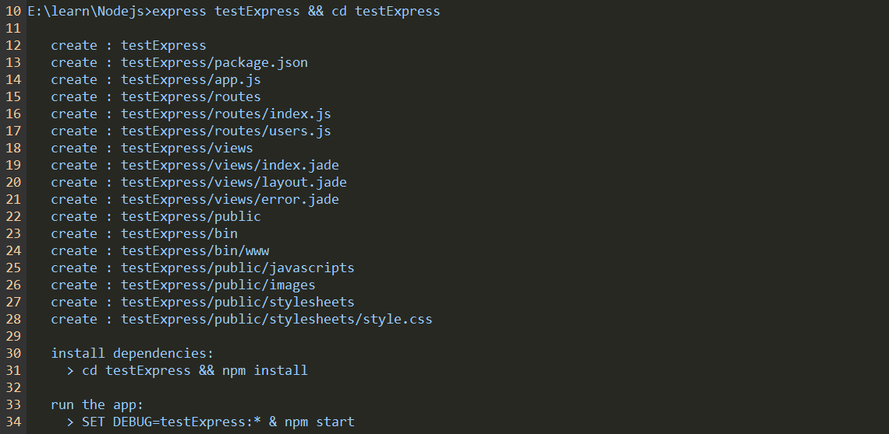
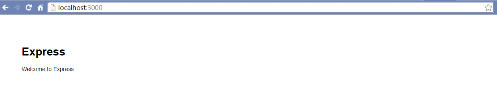

Ubuntu版本14.04.4 LTS
安装Ubuntu后一直没有使用root账户登录过，今天使用root登录发现无法登录，安装的时候没有给root账号设置过密码。查阅资料后发现可以通过以下方式来启用root账户：
在终端执行命令sudo passwd root，输入要修改的密码，然后就可以用root账号登录。
Ubuntu版本14.04.4 LTS
安装Ubuntu后一直没有使用root账户登录过，今天使用root登录发现无法登录，安装的时候没有给root账号设置过密码。查阅资料后发现可以通过以下方式来启用root账户：
在终端执行命令sudo passwd root，输入要修改的密码，然后就可以用root账号登录。
最近在学习Node.js，今天尝试安装最新版的 Express 4.13.1 框架，记录一下安装过程，分享给大家学习
全局安装最新版的Express
1 | npm install -g express |
需要注意的是，安装到这一步后，当你直接在命令行执行express命令时会报以下错误：
1 | C:\Users\Administrator>express -V |
这是因为4.x版本的Express已经把命令行工具 express-generator 独立出来，因此还需要全局安装express-generator
1 | npm install -g express-generator |
到这里全局安装就完成了，我们可以查看当前Express的版本
1 | express -V |
创建Express应用，并切换到该目录下
1 | express testExpress && cd testExpress |
这时候会生成Express项目的结构

接下来安装express以及所需的module
1 | npm install |
启动应用
1 | npm start |
这时候在浏览器访问 http://localhost:3000/ ，如看到下图则表示安装成功

参考 https://github.com/strongloop/express#quick-start
Express 4.x与Express 3.x 差别较大，如果需要安装Express 3.x，则可以指定版本安装1 | npm install -g express-generator@3 |
theme/landscape/layout/_widget/下新建weibo.ejs 文件，文件内容为上一步所复制的代码theme/landscape/_config.yml 中添加如下代码：1 | widges: |
在themes/landscape/layout/_partial/ 下新建 totop.ejs ，代码如下：
1 | <!-- 回顶部 --> |
在themes/landscape/source/js/ 下新建totop.js，代码如下：
1 | (function($) { |
在themes/landscape/layout/_partial/after_footer.ejs最后添加如下代码：
1 | <%- partial('totop') %> |
Hexo默认使用的评论框是国外比较流行的Disqus,为方便使用我们可以把评论框替换成国内比较流行的多说，我使用的是官方landscape主题，具体步骤如下:
在_config.yml中添加多说配置（二级域名就是创建站点时填写的多说域名）：
1 | duoshuo_shortname: 多说二级域名 |
修改themes\landscape\layout\_partial\article.ejs
把
1 | <% if (!index && post.comments && config.disqus_shortname){ %> |
替换成1
2
3
4
5
6
7
8
9
10
11
12
13
14
15
16
17
18
19
20<% if (!index && post.comments && config.duoshuo_shortname){ %>
<section id="comments">
<!-- 多说评论框 start -->
<div class="ds-thread" data-thread-key="<%= post.layout %>-<%= post.slug %>" data-title="<%= post.title %>" data-url="<%= page.permalink %>"></div>
<!-- 多说评论框 end -->
<!-- 多说公共JS代码 start (一个网页只需插入一次) -->
<script type="text/javascript">
var duoshuoQuery = {short_name:'<%= config.duoshuo_shortname %>'};
(function() {
var ds = document.createElement('script');
ds.type = 'text/javascript';ds.async = true;
ds.src = (document.location.protocol == 'https:' ? 'https:' : 'http:') + '//static.duoshuo.com/embed.js';
ds.charset = 'UTF-8';
(document.getElementsByTagName('head')[0]
|| document.getElementsByTagName('body')[0]).appendChild(ds);
})();
</script>
<!-- 多说公共JS代码 end -->
</section>
<% } %>
把
1 | <% if (item.comment && config.disqus_shortname){ %> |
替换成
1 | <% if (item.comment && config.duoshuo_shortname){ %> |